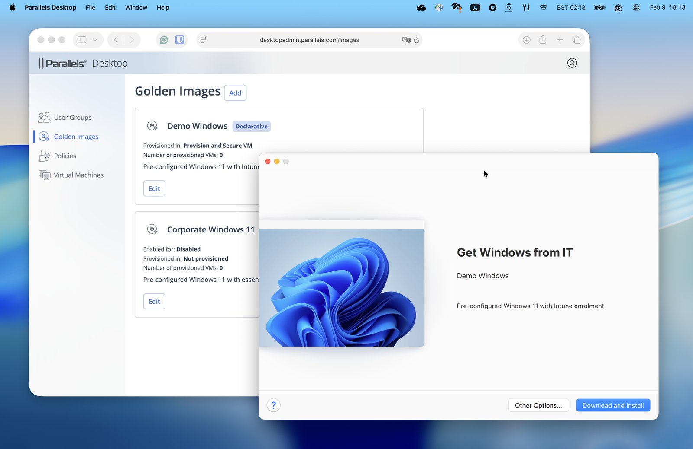
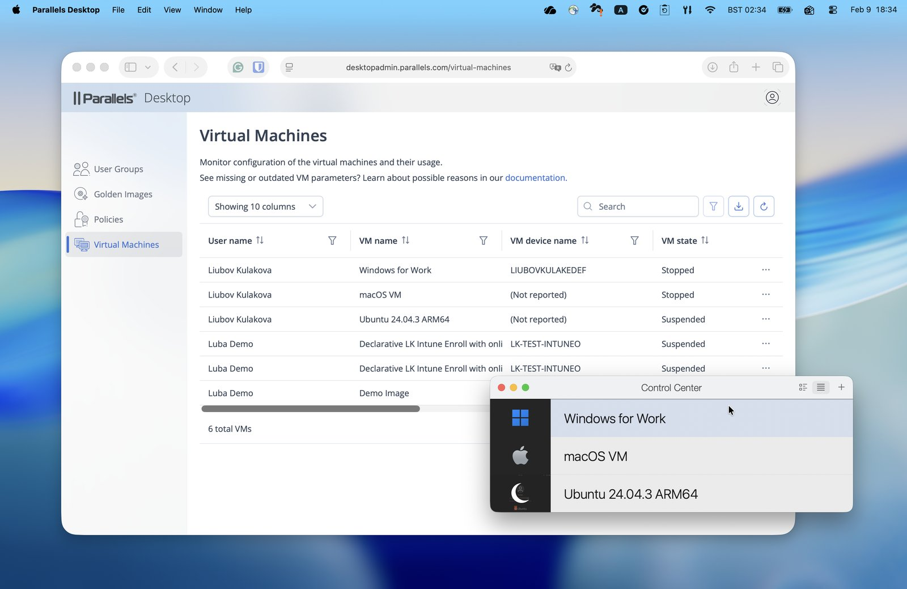
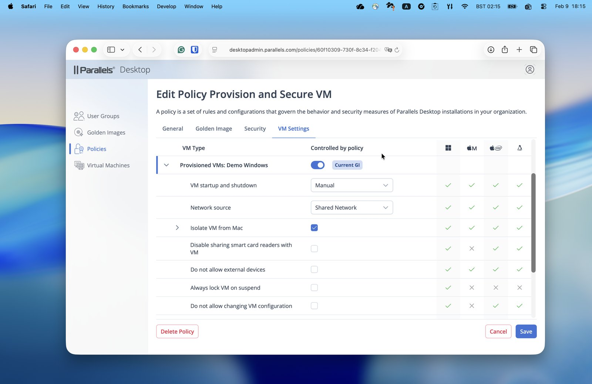
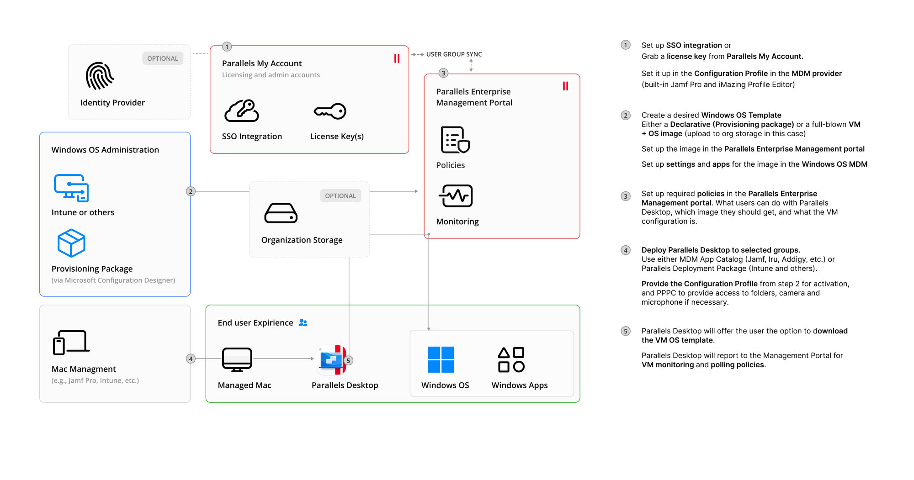
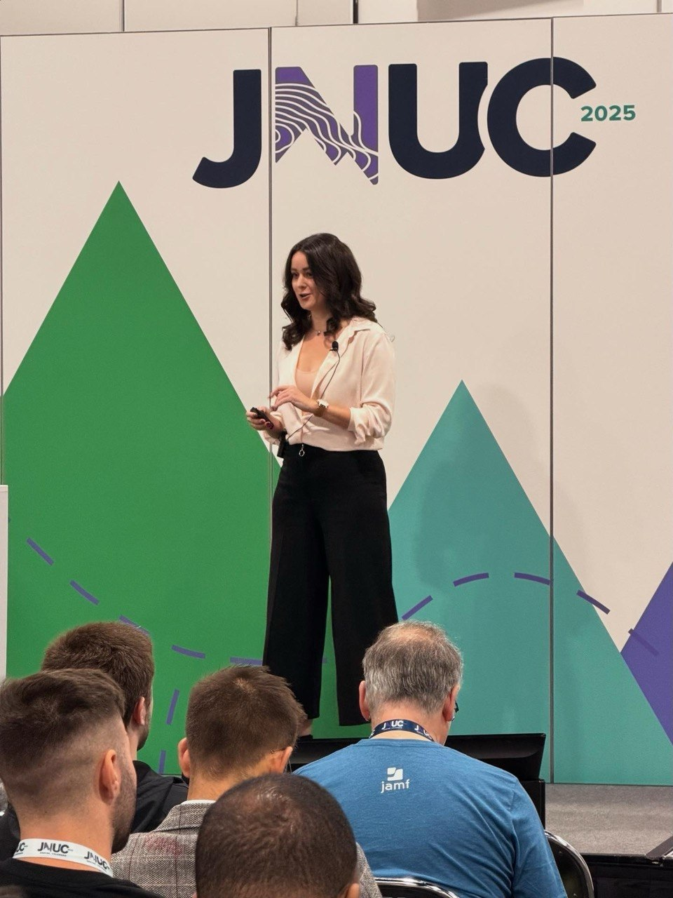

Product leader with 7+ years owning B2B enterprise software end to end: from strategy, vision, and multi-year roadmaps to the 0→1 launches that deliver them. Technical enough to earn engineers' trust, customer-facing to run discovery and demos with enterprise customers and turn their feedback into roadmap, in a community that trusts practitioners over marketing.
Vancouver, BC · Open to remote & hybrid
Strategy, customer-facing work, technical depth, and execution — the four sides of owning an enterprise product line end to end.
I own the full B2B direction of a multi-component product line — vision, multi-year roadmap, and the feature matrix across editions. I align engineering, sales, marketing, and leadership around one strategy and govern priorities across teams and release cycles.
I lead enterprise customer discovery, run demos and webinars, and present from the stage at industry conferences. I'm the bridge between what customers actually need and what we build — and the public face of the product to analysts, press, and partners.
I work on a highly technical product — desktop virtualization with an IT-admin focus. I speak the language of admins: MDM (Jamf, Intune), identity providers (Entra ID, SSO/SAML), SIEM, and Mac & Windows administration. I sit in architecture reviews and earn engineering's trust.
I write the PRDs and user stories, then coordinate design, development, QA, support, documentation, marketing, and sales to land releases on time. From technical preview in 3 months to a full enterprise GTM — I make the cross-functional machine actually deliver.
The outcomes a résumé can't hold. Click any project to see the problem, the strategy, the execution, and the result.
Parallels Desktop sold well to individuals and small teams, but large organizations needed centralized control, identity integration, and management at scale before they could adopt. An entire enterprise segment was out of reach.
I defined the vision and multi-year roadmap for a dedicated Enterprise Edition, built around a new SaaS Management Portal for controlling virtual machines at scale — and a tiered packaging model designed to open upsell paths from day one.
Built the Management Portal from 0→1 in under 12 months and shipped a technical preview within a 3-month window. Coordinated engineering, QA, marketing, sales, PR, order management, and support through announcement and GA. Drove enterprise discovery throughout to keep the build anchored to real constraints.
Secured Fortune 500 adoption within six months of GA, unlocked upsell to higher tiers, and turned a single-edition product into a tiered enterprise business.



Enterprise IT admins manage thousands of devices through established systems — Jamf, Microsoft Intune, Entra ID, Apple Business Manager. Before these integrations existed, Parallels was locked out of organizations that required them as a condition of purchase. Great product, wrong ecosystem fit.
I prioritized the integrations that directly unblock enterprise deals, then went further — partnering with Apple, Jamf, and Microsoft at a roadmap level rather than just consuming their APIs. The goal: make Parallels a native citizen in the enterprise IT ecosystem, not something admins have to work around.
Designed and led SSO integration across a wide range of identity providers (SAML, SCIM). Defined and shipped Golden Image deployment — enabling IT admins to deploy pre-configured Windows VMs at scale — and Multiple Golden Image management for orgs with different user groups. Authored technical customer guides (including Single App Mode with Intune enrollment and Sysprep). Trained sales, support, marketing, and partner engineers on each integration; provided hands-on support to enterprise customers during their own deployments.
Removed the integration blockers standing between the product and enterprise procurement. Became the company's technical SME on enterprise IT integrations — the primary resource for sales escalations and customer deals. Partnerships with Apple, Jamf, and Microsoft extended to joint roadmap influence, not just API consumption.

Apple enterprise IT admins are a tight-knit, technically demanding community. They don't trust vendor marketing — they trust peers and practitioners. Entering this market meant earning credibility there, not just building a product for it.
I became the external voice of the B2B product line — the PM who also takes the stage. The insight was that outbound isn't just sales support; done right, it's the fastest and richest feedback loop for roadmap decisions. Real conversations with admins at MacAdmins or JNUC surface requirements no survey ever would.
Presented at MacAdmins and JNUC (Jamf Nation User Conference) — the two most influential conferences for Apple enterprise IT — creating all content and visuals independently (JNUC 2025 slides). Co-hosted joint webinars with Apple, combining partner co-marketing with live technical education for enterprise IT admins. Ran customer discovery sessions and product demos that fed directly into the roadmap.
Became a recognized name in the MacAdmins community — returned as a speaker in 2026 with "The Mac-Native Way to Deliver Windows Apps, Powered by Parallels Desktop." Customer feedback from this outbound work directly seeded the Golden Image management and SSO scope that made the product enterprise-ready.
Parallels Toolbox had over a million users but a negative NPS (as low as −7) and flat engagement — a sign of stability and usability debt eroding a large base.
I rebuilt the measurement foundation first: migrated analytics to Amplitude, separated paid users from bundled free users in the NPS survey for cleaner signal, then prioritized the roadmap directly from in-depth NPS analysis.
Shipped targeted UX and performance improvements, a redesigned Windows experience, A/B-tested freemium flows on macOS, and a new taskbar agent mode to raise prominence. Validated each release against the metrics and adjusted.
NPS climbed from negative into the 30s; monthly users seeing the Toolbox agent grew 3×; MAU rose 20%.
Parallels' consumer products each handled installation differently, creating friction, failed installs, and duplicated effort across product teams.
I researched internal and external installer solutions, gathered requirements across Parallels and Corel product teams, and defined a strategy for one shared Universal Installer — plus a self-service build system so teams could generate builds independently.
Launched the installer 0→1, set up the team's interaction model, release process, and cross-team communication from scratch, and led migration of Toolbox onto it. Presented the self-service build proposal to management and got it approved and funded.
98% install success rate and 200,000 monthly installations across the consumer portfolio, on a foundation other teams could build on without bottlenecks.
Leading a product line is more than features. It's owning the business, developing people, and shaping how the organization operates.
Owns the full B2B product line's P&L thinking — editions, pricing, packaging, and upsell — accountable for turning product decisions into revenue, not just releases.
Leads company-wide roadmap reviews and strategy presentations with leadership, sales, and engineering — the primary authority on B2B product strategy across the org.
Built Parallels' patent-portfolio program from the ground up and scaled it to Corel — 20+ products, 300+ developers in structured IP brainstorming — and created an R&D grant function securing 50% cost reimbursement through a University of Malta partnership.
Led programs and releases across international offices and distributed teams; works in English, French, and Russian.
My leadership scope has always been bigger than my reporting line — leading through enablement, shared language, and the systems people work in.
Every major release, I build and deliver technical enablement for the 50+ person cross-functional team — sales, SEs, support, marketing — so knowledge never bottlenecks on me. The measure of my leadership is what the team can do when I'm not in the room.
Alignment fails when every team describes the product differently. The "Levels of Control" framework I created for conference talks became the common vocabulary across sales, marketing, and leadership — one mental model from roadmap review to customer call.
I've repeatedly built the system before the deliverable. The Universal Installer shipped with its own release process, cross-team interaction model, and a self-service build system — because a platform without an operating model just becomes a new bottleneck.
As Mentorship Program Manager at ProductBC, I've organized career development for 150+ product people in Vancouver — matching mentors, designing the program, and keeping it running season after season.
I don't just build for the Apple/MDM admin community — I'm part of it.

2025: "Managed Desktop Virtualization at Enterprise Scale" — presented Parallels Desktop Enterprise Edition to enterprise IT decision-makers. All content created independently. Slides (PDF)
2026: "The Mac-Native Way to Deliver Windows Apps, Powered by Parallels Desktop." ▶ Watch the session · Session details ↗
2025: "Virtualization in IT and Education: Best and Latest Practices." Session details ↗
{kind=link}
{kind=link}
{kind=link}
{kind=link}
{kind=link}